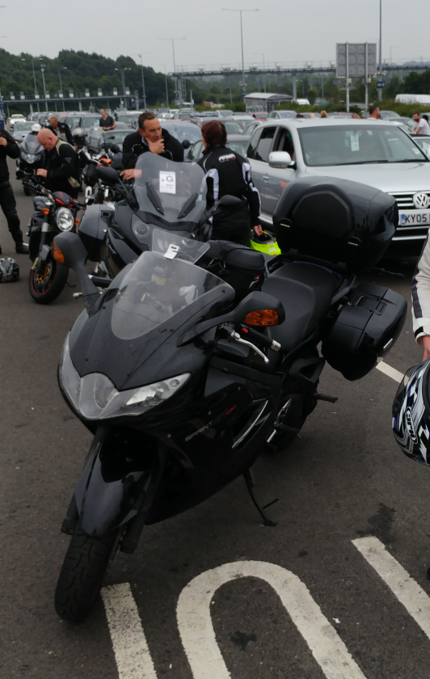
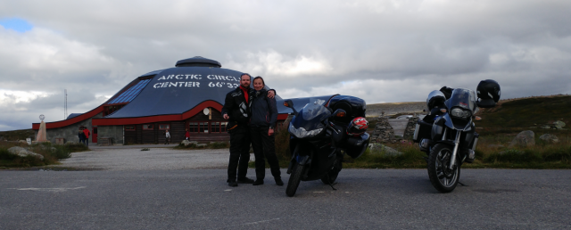
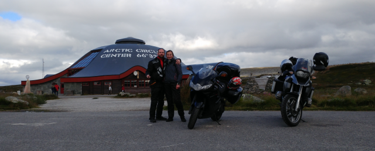

This year's trip was slightly further afield, to Norway. We didn't quite make it to Nordkapp, but well inside the Arctic Circle. This one was a bit of a logistical nightmare, as there are no longer any direct ferries from the UK.
So we first headed through the tunnel to Belgium, then borded a cargo ship bound for Brevik. I had visions of being stuck in a dark, dank room full of dripping pipes, but I have to say it was one of the most luxurious sea voyages I've ever taken!
Aside from a rather dopey looking moose trying to jump onto the bike from a high roadside ledge the trip went perfectly. The highlight was Lofoten, a picturesque coastal area where we lodged in a fishing hut over the water. We even managed to get hold of a dinghy for excursions and quick trips to the shops. The highlight of the riding was the Trollstigen - look at that road!

 
